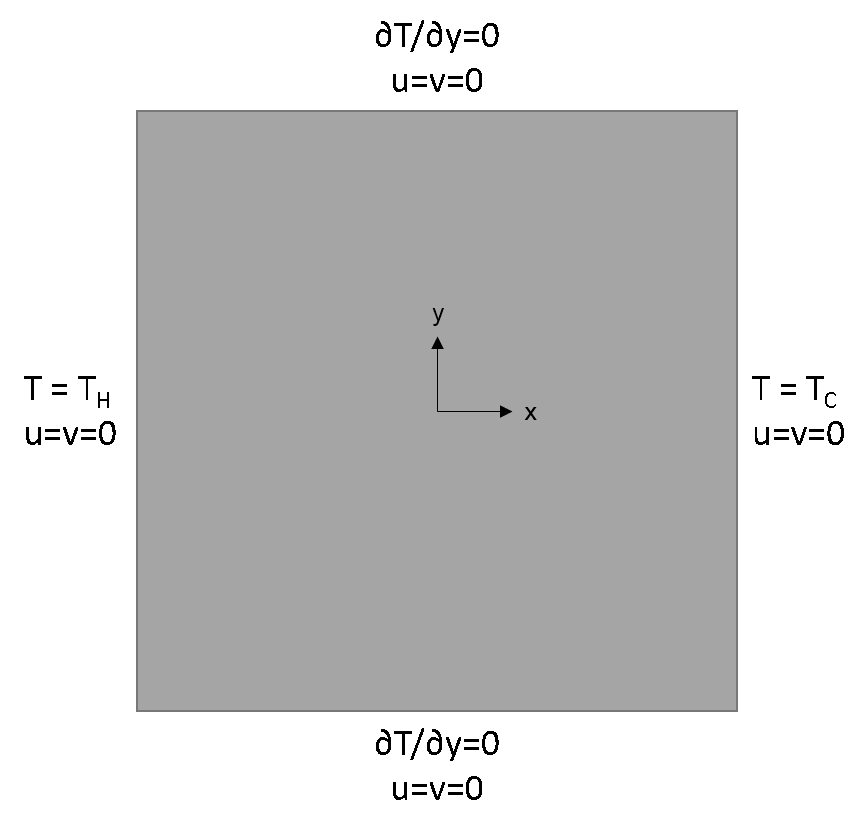

ANSYS® Fluent CFD: A Short Course for Engineers
3. Natural Convection
Computational Science and Engineering
Contents
Natural Conection in a Square Cavity¶Introduction¶Natural convection flows are encountered in various engineering applications. In this lab, you will solve a steady state natural convection problem in a 2D square cavity. The flow is induced by thermal differential between the left and right walls that are held at constant hot and cold temperatures, respectively. The top and bottom walls are insulated (i.e. zero heat flux). The fluid near the left wall ascends because it is hotter than the ambient, while the fluid near the right wall descends because it is cooler, hence generating a clockwise vertex. The phenomenon is characterized by Rayleigh number:
In this formula, $L$ $=$ Length of the plate $T_H$ $=$ Temperature of hot edge $T_C$ $=$ Temperature of cold edge $g$ $=$ Acceleration due to gravity β $=$ Thermal Expansion Coefficient ρ = Density μ = Dynamic Viscosity α = Thermal Diffusivity  |

Geometry and Mesh¶
|
Setup¶
The density is the ρ$_0$ in the Boussinesq approximation.
|
Post-processing¶
Do the results make sense? Compare your results to the benchmark solution (de Vahl Davis 1983). The materials are different. So the magnitude will not match. However, the location of velocity maxima should be the same (in his notation, $u_m$$_a$$_x$ is max $X$-velocity, and $z$ is $Y$-axis; $w_m$$_a$$_x$ is max $Y$-velocity, and $x$ is $X$-axis). Is it a good simulation? |
Credits
Sparsh Chadha, Neal Davis, and Zhongzhong Zhang developed these materials for Computational Science and Engineering at the University of Illinois at Urbana–Champaign.
 This content is available under a Creative Commons Attribution-NonCommercial 4.0 Unported License.
This content is available under a Creative Commons Attribution-NonCommercial 4.0 Unported License.